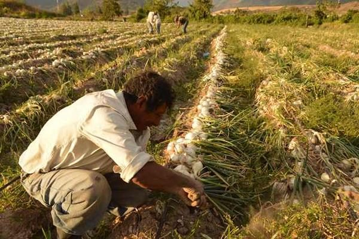

Economía de Santa Rosa
Su economía se desarrolla alrededor de la agricultura, especialmente el café. En esta región abundan los beneficios de café. También se produce caña de azúcar, maíz, frijol, arroz, papa, ajonjolí, maicillo, algodón, tabaco y frutas. A la vez, abundan las fincas ganaderas y de ahí la fama de sus quesos, cremas y mantequillas. En el aspecto industrial, hay ingenios de azúcar (Lanuza, s.f.). Existe mucha producción artesanal en Santa Rosa que incluye el trabajo en jarcia, talabartería, madera, cerería, cestería, utencilios para la pesca como la atarraya e intrumentos musicales (Diccionario Municipal de Guatemala, 2001).
La principal actividad económica en Santa Rosa es Economía Producción agrícola Entre sus productos agrícolas sobresalen el café, que es de buena calidad, caña de azúcar, maíz, frijol, arroz, Papa (tubérculo) papa malanga, ajonjolí, maicillo, algodón, tabaco cebolla, aguacate, tomate y frutas, especialmente la piña llamada de azúcar. Producción pecuaria, en el aspecto pecuario destacan los municipios de Guazacapán, Oratorio y Taxisco. En estos mismos lugares hay haciendas de ganado vacuno con gran producción de leche, Crema de leche, crema, queso, requesón y mantequilla. Producción industrial, en el aspecto industrial hay ingenios de azúcar y beneficios de café. Producción artesanal, en algunos municipios elaboran tejidos de algodón, cohetería, cestería y cerería. Por tener acceso al mar, hay muchas salinas, especialmente en Guazacapán y Chiquimulilla, así como la elaboración de atarrayas y redes para pesca. La agricultura y la ganadería. Los cultivos principales son el arroz (primer productor a nivel nacional con el 18.5% por el uso de cultivo muy industrializado y altamente tecnificado), Chile pimiento (primer productor nacional con el 20%), Tomate (Primer productor nacional con el 20.2%), frijol (segundo productor con el 13.5%,luego de Petén con el 17%), cebolla (con el 21.4% es el segundo productor a nivel nacional después de Quiché con el 24.7%), melón (tercer productor nacional después de Zacapa y Santa Rosa), mango (cuarto productor a nivel nacional con el 7.19% después de Retalhuleu, Santa Rosa y Suchitepéquez) el maíz (quinto productor a nivel nacional con el 6,6% luego de Peten, Alta Verapaz, Quiche y Huehuetenango), además se produce sorgo, lentejas, azúcar, tabaco, papas, mandioca, sésamo, henequén, maguey, café, algodón y diversas frutas. Jutiapa también es el segundo departamento productor de leche a nivel nacional. La producción agrícola: Entre sus productos agrícolas sobresalen el café, que es de buena calidad, caña de azúcar, maíz, frijol, arroz, papa, ajonjolí, maicillo, algodón, tabaco y frutas, especialmente la piña llamada de azúcar, producción pecuaria: En el aspecto pecuario destacan los municipios de Guazacapán, Oratorio y Taxisco. En estos mismos lugares hay haciendas de ganado vacuno con gran producción de leche, crema, queso y mantequilla. Producción industrial: En el aspecto industrial hay ingenios de azúcar y beneficios de café. Producción artesanal: En algunos municipios elaboran tejidos de algodón, cohetería, cestería y cerería. Por tener acceso al mar, hay muchas salinas, especialmente en Guazacapán y Chiquimulilla, así como la elaboración de atarrayas y redes para pesca.
